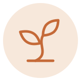
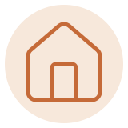

がじゅまると、一匹の子猫
「がじゅまる」は、院長が石垣島で出会った一匹の子猫の名前です。旅の途中、お母さん猫を亡くしたばかりの子猫が、道のすみで鳴いていました。放っておけずに連れて帰り、島に多く生えている木にちなんで「ガジュマル」と名づけました。今も院長の家で、元気に暮らしています。
ガジュマルは、太い根をしっかり張って、大きな木陰をつくる木です。その木陰のように、子どもからお年寄りまで、家族みんなが気軽に立ち寄れる場所に。あの日の子猫にもらった名前に、そんな思いを重ねています。

院長プロフィール
- 氏名
- 桑田 淳（くわた あつし）
- 経歴
- 2021年 歯科医師免許を取得（鶴見大学歯学部 卒業）
2022〜2023年 日本歯科大学新潟病院にて臨床研修を修了し、歯科医療の基礎を幅広く学ぶ
その後 都内・近郊のさまざまな立地（駅前・商業施設・住宅地など）の歯科医院で診療。お子さまからご高齢の方、障がいのある方まで、補綴（かぶせ物・入れ歯）から小児まで幅広く対応し、通院がむずかしい方への訪問診療にも携わる
2026年 辻堂がじゅまる歯科を開院 - 所属
- 藤沢市歯科医師会
※ 写真はイメージです。実際の院長写真は撮影後に差し替えます。
当院の考え
まずは、お話を聞くことから。
何に困っているのか、どうなりたいのか。それをうかがわないまま治療を始めることはしません。お口の中だけでなく、お気持ちにも耳を傾けます。（仮）
保険診療を、基本に。
まずは保険診療でできることから対応します。自費の選択肢をご説明することはありますが、無理におすすめすることはありません。決めるのは患者さまです。（仮）

抜くのは、最後の手段。
ご自身の歯にまさるものはありません。むし歯は必要な分だけ削って治しますが、抜くのは最後の手段。歯を長く使っていただけるよう、本当に必要な治療を心がけます。（仮）

家族みなさまの、かかりつけに。
お子さまからご年配の方まで。一度きりではなく、これから先も長くお付き合いできる歯医者でありたいと考えています。（仮）